Manual de usuario
Cómo registrar los animales, controlar la capacidad del camión y administrar el sistema, paso a paso.
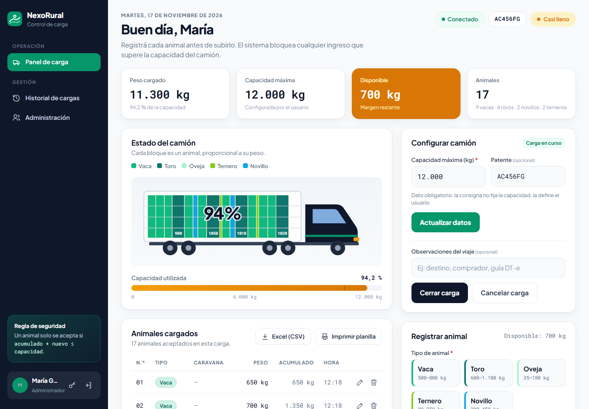
Contenido
- Qué es NexoRural
- Cómo abrir el sistema
- Primer ingreso (crear el administrador)
- Ingresar
- El panel de carga
- Iniciar una carga
- Registrar animales
- Cuando el camión no admite más
- Pesos fuera de lo habitual
- Corregir o eliminar un registro
- Cerrar o cancelar la carga
- Planilla e Excel
- Historial de cargas
- Administración
- Cambiar mi contraseña
- Usar NexoRural desde el celular
- Respaldos de la información
- Problemas frecuentes
- Mensajes del sistema
1. Qué es NexoRural
NexoRural es una página web para registrar el peso de cada animal antes de subirlo al camión. Suma los pesos automáticamente y no deja agregar un animal si con él se supera la capacidad máxima del camión.
Si la suma da igual o menos que la capacidad, el animal se acepta. Si da más, se rechaza y no cambia nada.
Quiénes lo usan
| Rol | Qué puede hacer |
|---|---|
| Capataz / encargado | Iniciar, cargar, corregir, cerrar y cancelar sus cargas. Ver el historial. Imprimir y exportar. Cambiar su contraseña. |
| Administrador | Todo lo anterior, más la sección Administración: usuarios, camiones guardados, categorías de animales y acceso desde celulares. |
Cada persona tiene su propia carga en curso: un capataz no puede tocar la de otro.
2. Cómo abrir el sistema
NexoRural funciona en una computadora con XAMPP (Apache y MySQL encendidos).
- En esa computadora: abrí el navegador y escribí
http://localhost/nexorural/ - En un celular o tablet conectado al mismo wifi: usá la dirección que aparece en Administración → Acceso desde celulares (por ejemplo
http://192.168.1.18/nexorural/). Ver la sección 16.
http://localhost/nexorural, (con coma) da error 404.Arriba a la derecha de cada pantalla aparece el estado de la conexión:
| ● Conectado | Los datos se guardan en la base de datos y se comparten entre todos los equipos. |
| ● Modo local | La página se abrió sin servidor (doble clic en el archivo). Los datos quedan solo en ese navegador. Sirve para practicar o si falla el servidor. |
3. Primer ingreso (crear el administrador)
La primera vez que se abre NexoRural, la base está vacía y la pantalla pide crear la cuenta del administrador:
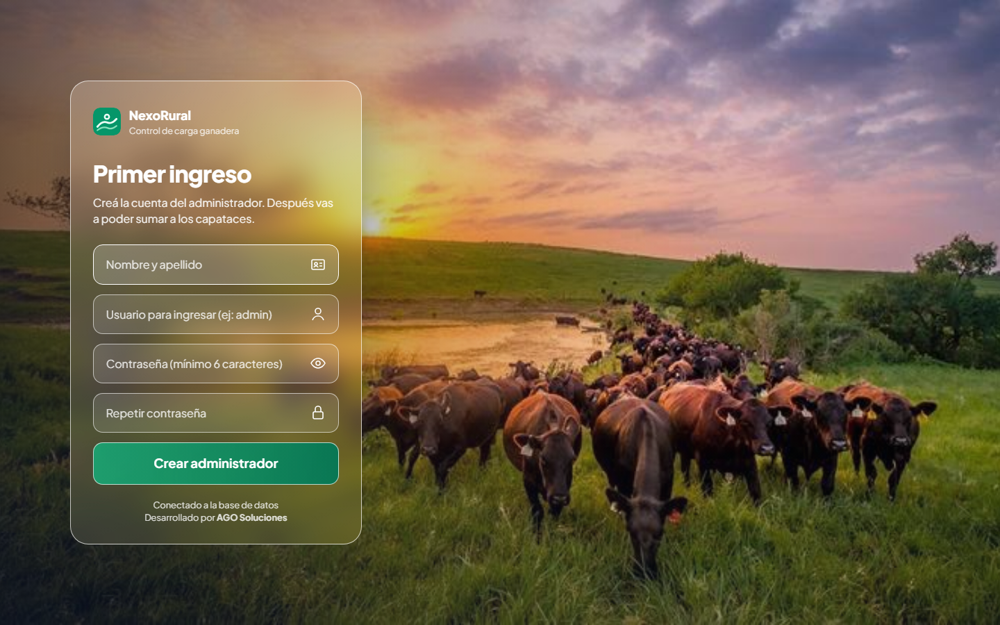
- Escribí tu nombre y apellido.
- Elegí un usuario para ingresar (letras y números, sin espacios; por ejemplo
maria). - Elegí una contraseña de al menos 6 caracteres y repetila.
- Tocá Crear administrador. Entrás directo al panel.
Esto se hace una sola vez. Las demás cuentas se crean desde Administración.
4. Ingresar
- Escribí usuario y contraseña y tocá Ingresar. El ojo 👁 muestra lo que escribiste.
- Recordarme en este equipo mantiene la sesión abierta 30 días. No lo marques en computadoras compartidas.
- Por seguridad, después de 5 intentos fallidos el usuario queda bloqueado 5 minutos.
- Para salir, tocá el botón ⇥ de la tarjeta de usuario (abajo a la izquierda).
5. El panel de carga
| Parte | Para qué sirve |
|---|---|
| Indicadores (arriba) | Peso cargado, Capacidad máxima, Disponible (lo que todavía entra) y Animales por categoría. |
| Estado del camión | Cada bloque es un animal, del ancho que corresponde a su peso y con el color de su categoría. |
| Barra de capacidad | Verde mientras hay lugar, ámbar desde el 85 % y roja cuando el camión está completo. |
| Configurar camión | Capacidad, patente y los botones para cerrar o cancelar la carga. |
| Registrar animal | Categoría, peso y caravana del animal que se va a subir. |
| Animales cargados | La lista con el acumulado, para corregir, eliminar, imprimir o exportar. |
| Rangos orientativos (abajo) | Los pesos habituales de cada categoría (sección 9). |
6. Iniciar una carga
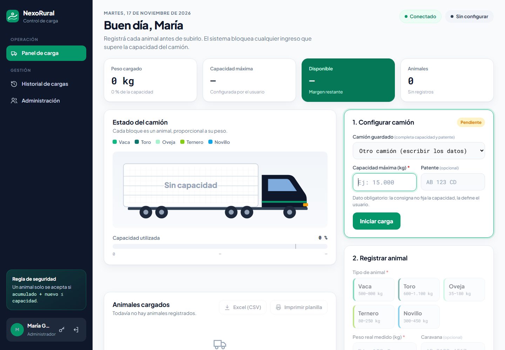
- Si el camión está guardado, elegilo en Camión guardado: completa solo la capacidad y la patente.
- Si no, escribí la capacidad máxima en kg (obligatoria) y, si querés, la patente.
- Tocá Iniciar carga.
7. Registrar animales
- Tocá la categoría (Vaca, Toro, Oveja y las que agregue el administrador). Debajo de cada una figura su rango habitual.
- Escribí el peso real medido en kg. Debajo aparece cómo se va a registrar:
Se registrará: 650,5 kg. - Opcional: la caravana del animal.
- Tocá Registrar animal (o Enter).
Cómo escribir el peso
| Escribís | Se registra |
|---|---|
650 | 650 kg |
650,5 | 650,5 kg (la coma es el decimal) |
1.100 | 1.100 kg (el punto separa los miles) |
0, -5, abc, vacío | Se rechaza: «Ingrese datos válidos» |
Si se acepta aparece un mensaje verde con lo que queda disponible, y el campo de peso queda listo para el próximo animal. Ningún animal puede pesar más de 2.000 kg.
En el celular, con una carga en curso, el formulario de registrar aparece primero (sección 16).
8. Cuando el camión no admite más
Si el animal hace que se supere la capacidad, no se agrega y aparece en rojo «Capacidad máxima superada», con cuánto sería el total, por cuánto se pasa y cuánto queda disponible. En el camión se marca con un recuadro rojo punteado el lugar que ocuparía.
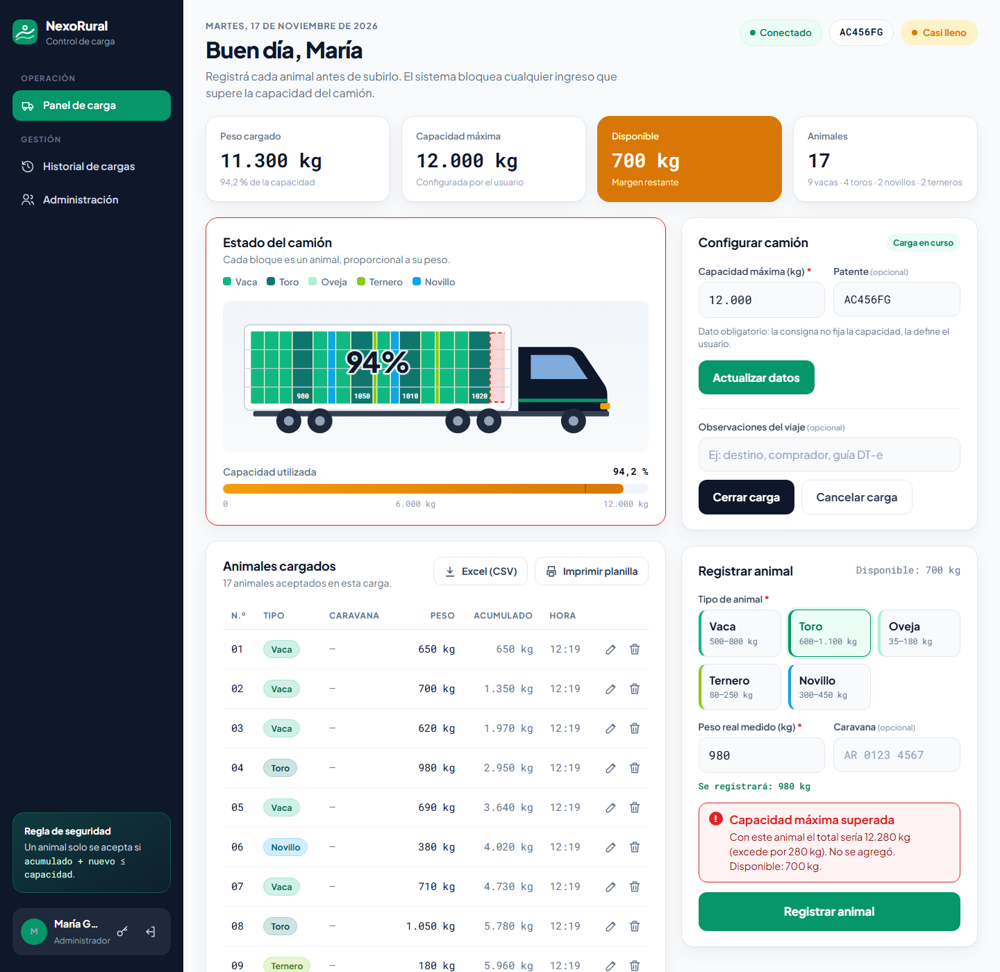
9. Pesos fuera de lo habitual
Cada categoría tiene un rango orientativo (por ejemplo, vaca adulta 500–800 kg). Sirve para detectar errores de tipeo, no es un límite.
Si el peso queda fuera del rango, aparece un aviso ámbar y el botón cambia a Confirmar igualmente:
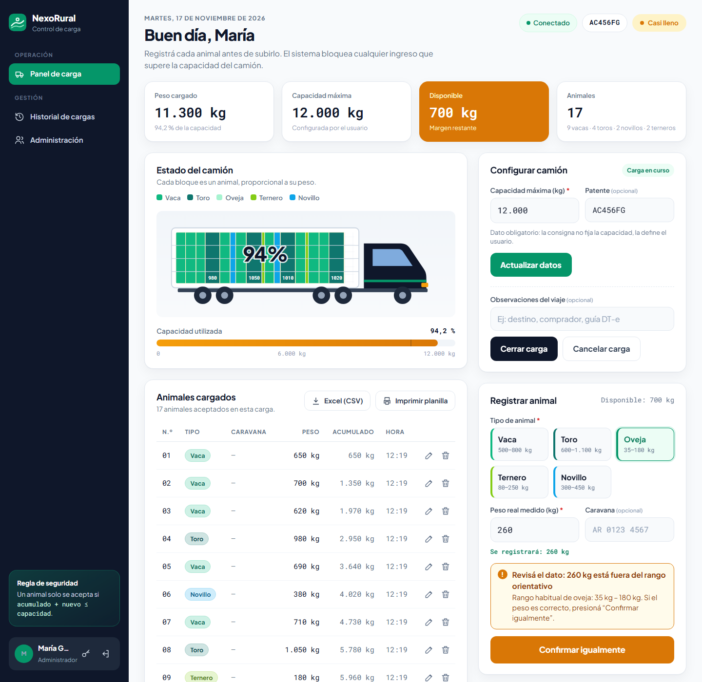
- Si el peso está mal, corregilo: el aviso desaparece.
- Si está bien, tocá Confirmar igualmente. En la lista queda marcado como revisado.
10. Corregir o eliminar un registro
En cada fila de Animales cargados hay dos botones:
- ✏️ Corregir: cambia la categoría, el peso o la caravana. Tocá Guardar o Cancelar. La corrección también controla la capacidad: si con el peso nuevo el camión se pasa, avisa y no guarda.
- 🗑 Eliminar: quita el animal y recalcula todo. Mientras se ve el mensaje, se puede tocar Deshacer.
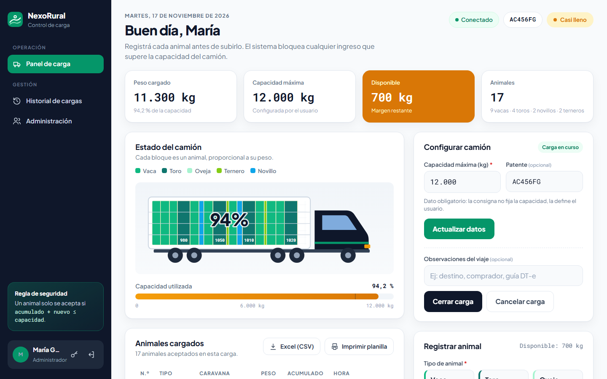
11. Cerrar o cancelar la carga
En Configurar camión, cuando la carga está en curso:
| Botón | Cuándo usarlo |
|---|---|
| Cerrar carga | El camión salió. Antes podés escribir Observaciones del viaje (destino, comprador, guía DT-e…). Queda en el historial como Cerrada. |
| Cancelar carga | El viaje no sale. Queda en el historial como Cancelada. |
Los dos botones piden un segundo toque para confirmar, así no se cierran por error.
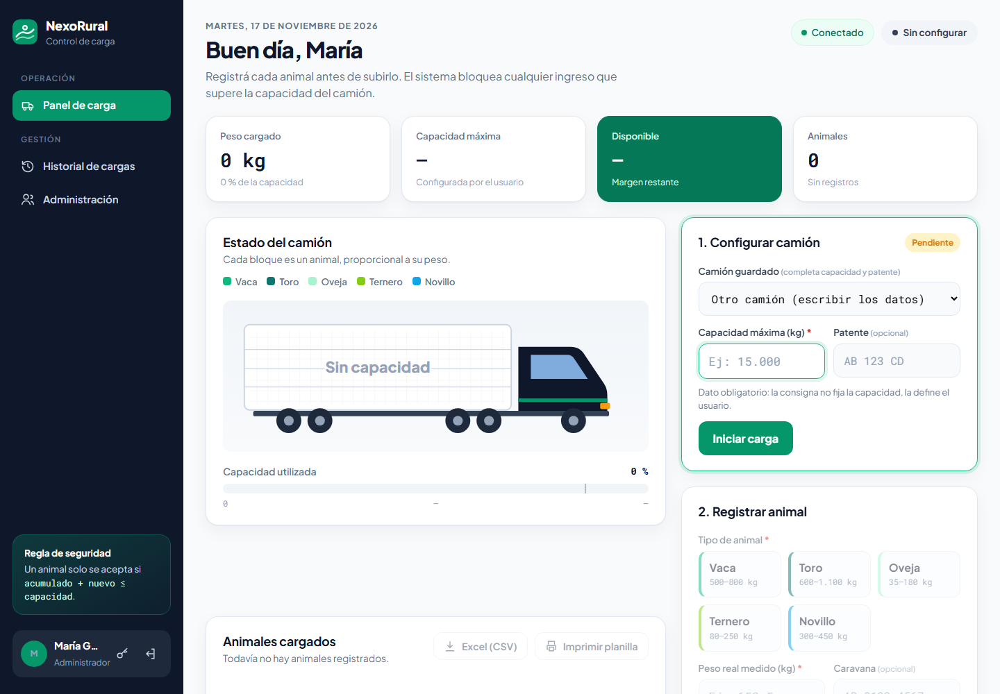
12. Planilla e Excel
- Imprimir planilla: hoja con todos los datos de la carga y lugar para la firma del encargado. También se puede guardar como PDF desde la ventana de impresión.
- Excel (CSV): descarga la lista de animales en un archivo que Excel abre directamente.
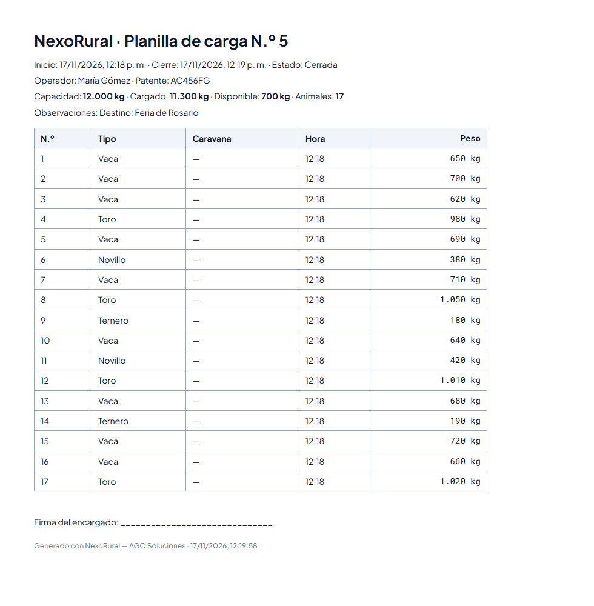
13. Historial de cargas
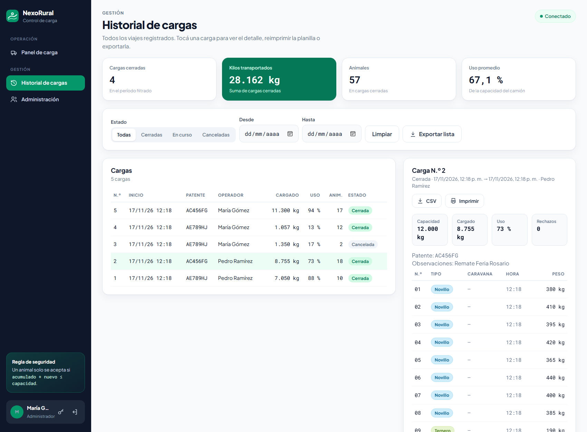
- Totales del período: cargas cerradas, kilos transportados, animales y uso promedio del camión.
- Filtros: por estado (Todas, Cerradas, En curso, Canceladas) y por fechas. Limpiar los quita.
- Tocá una carga para ver el detalle: patente, observaciones, animales y cuántos intentos fueron rechazados. Desde ahí se puede imprimir la planilla o descargar el CSV.
- Exportar lista descarga todas las cargas filtradas para Excel.
Las cargas del historial no se pueden modificar: quedan como registro.
14. Administración
Solo la ven los administradores.

Usuarios
- Crear: nombre, usuario, rol (capataz o administrador) y contraseña inicial. Pasale la contraseña a la persona.
- Clave: asigna una contraseña nueva si alguien se la olvidó (también lo desbloquea).
- Desactivar / Activar: un usuario desactivado no puede ingresar, pero sus cargas quedan en el historial. No podés desactivarte a vos mismo.
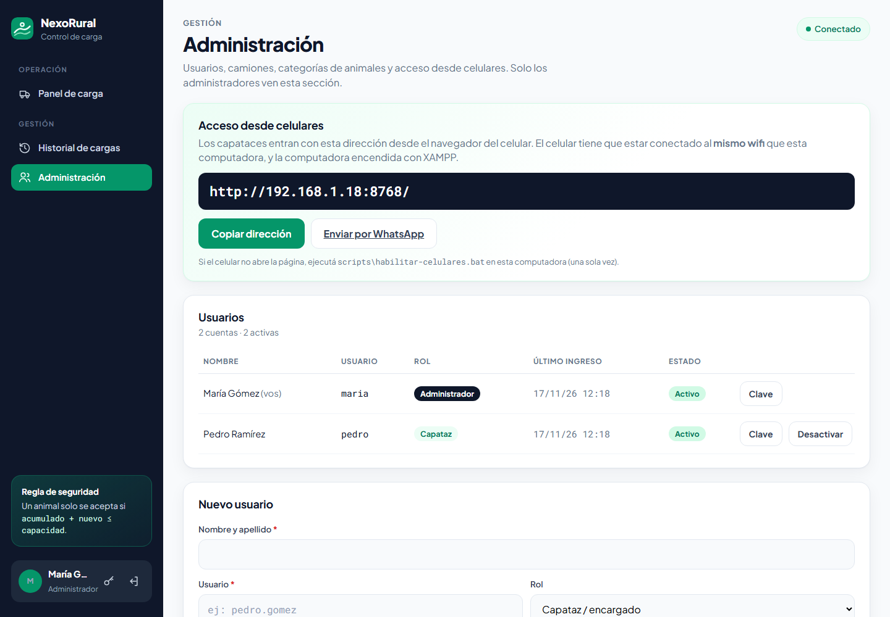
Camiones guardados
Patente, descripción y capacidad. Aparecen en la lista Camión guardado al iniciar una carga. Editar cambia sus datos; Desactivar lo saca de la lista sin borrar los viajes hechos.
Categorías de animales
Además de vaca, toro y oveja se pueden crear otras (ternero, novillo, vaquillona…) con su peso mínimo y máximo orientativo. Cada una toma un color propio. Una categoría desactivada no se puede elegir para cargar, pero sigue apareciendo en el historial. Siempre tiene que quedar al menos una activa.
15. Cambiar mi contraseña
Cualquier usuario puede hacerlo con el botón 🔑 de su tarjeta (abajo a la izquierda): contraseña actual, la nueva (mínimo 6 caracteres) y repetirla.
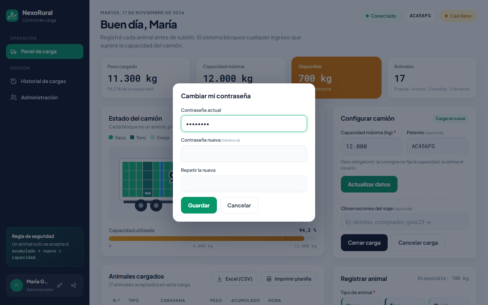
16. Usar NexoRural desde el celular
- Una sola vez, en la computadora con XAMPP: doble clic en
scripts\habilitar-celulares.baty aceptar el permiso de Windows. Permite la entrada desde el wifi local (desde internet sigue bloqueado). - En Administración → Acceso desde celulares está la dirección. Tocá Copiar dirección o Enviar por WhatsApp.
- En el celular, conectado al mismo wifi, abrí esa dirección e ingresá con tu usuario.
- Desde el menú del navegador, Agregar a la pantalla de inicio: queda como una app con su ícono.
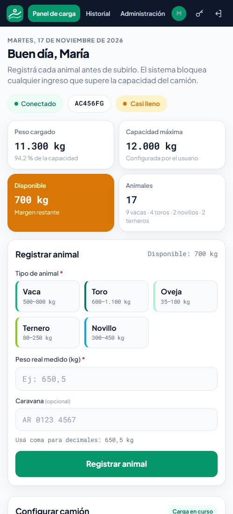
17. Respaldos de la información
Todos los días a las 20:00 se guarda una copia completa de la base en Documentos\NexoRural-respaldos (si la computadora estaba apagada, se hace al encenderla). Se conservan los últimos 30 días.
Archivo (carpeta scripts) | Para qué |
|---|---|
respaldo.bat | Hacer un respaldo en el momento. |
programar-respaldo.bat | Activar el respaldo diario (ya viene activado en la PC de instalación). |
restaurar-respaldo.bat | Volver a un respaldo. Pide escribir SI y antes guarda una copia del estado actual. |
18. Problemas frecuentes
| Qué pasa | Qué hacer |
|---|---|
| Error 404 al abrir la página | Revisá la dirección: http://localhost/nexorural/ sin coma ni punto al final. |
| «No se pudo conectar con el servidor» | En el panel de XAMPP encendé Apache y MySQL. |
| MySQL no arranca en XAMPP («puerto 3306 en uso») | Hay otro MySQL abierto. Cerrá los paneles de XAMPP repetidos (dejá uno solo) o reiniciá la computadora y volvé a encenderlo. |
| «La base de datos "nexorural" no existe» | Importá database\nexorural_estructura.sql en phpMyAdmin (ver docs\GUIA_BASE_DE_DATOS.md). |
| El celular no abre la página | Mismo wifi que la PC · ejecutar habilitar-celulares.bat · revisar la dirección en Administración · la red de Windows tiene que estar como Privada. |
| Un capataz se olvidó la contraseña | Un administrador le asigna una nueva en Administración → Clave. |
| El único administrador se olvidó la contraseña | En la computadora del servidor, doble clic en scripts\restablecer-clave.bat: muestra los usuarios y permite poner una contraseña nueva. |
| «Demasiados intentos fallidos» | Esperá 5 minutos, o que un administrador le asigne una clave nueva. |
| Indicador Modo local | La página se abrió con doble clic, sin servidor. Abrila desde http://localhost/nexorural/. |
| Se ven datos viejos o la página no cambia | Recargá con Ctrl + F5. |
19. Mensajes del sistema
| Mensaje | Significado |
|---|---|
| Animal registrado correctamente | Se agregó y se actualizaron los totales. |
| Capacidad máxima superada | Con ese animal se pasa el límite del camión. No se agregó nada. |
| Ingrese datos válidos | Falta la categoría, o el peso está vacío, es texto, es cero, negativo o mayor a 2.000 kg. |
| Revisá el dato: … fuera del rango orientativo | El peso es raro para esa categoría. Corregilo o tocá Confirmar igualmente. |
| Configure primero la capacidad máxima del camión | No hay una carga iniciada. |
| La capacidad no puede ser menor al peso ya cargado | Se intentó bajar la capacidad por debajo de lo que ya está en el camión. |
| Ya tenés una carga abierta | Cerrá o cancelá la carga actual antes de empezar otra. |
| Tu sesión expiró | Volvé a ingresar con tu usuario. |
NexoRural · Manual de usuario · AGO Soluciones